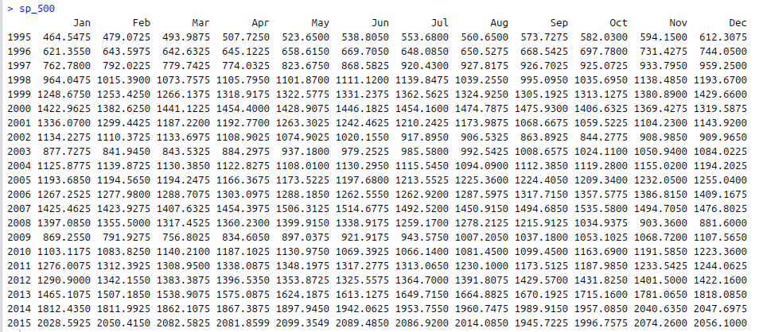
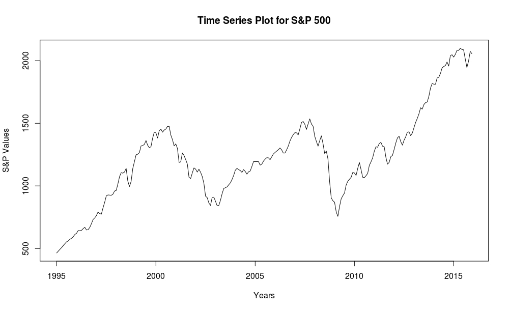
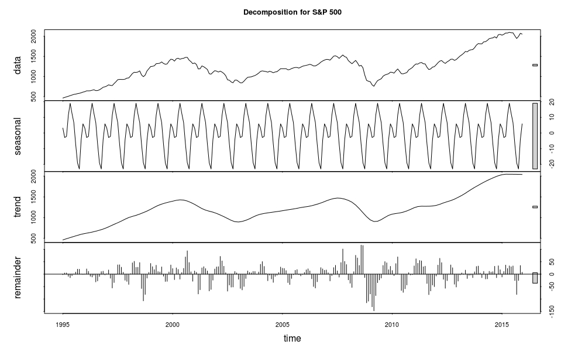
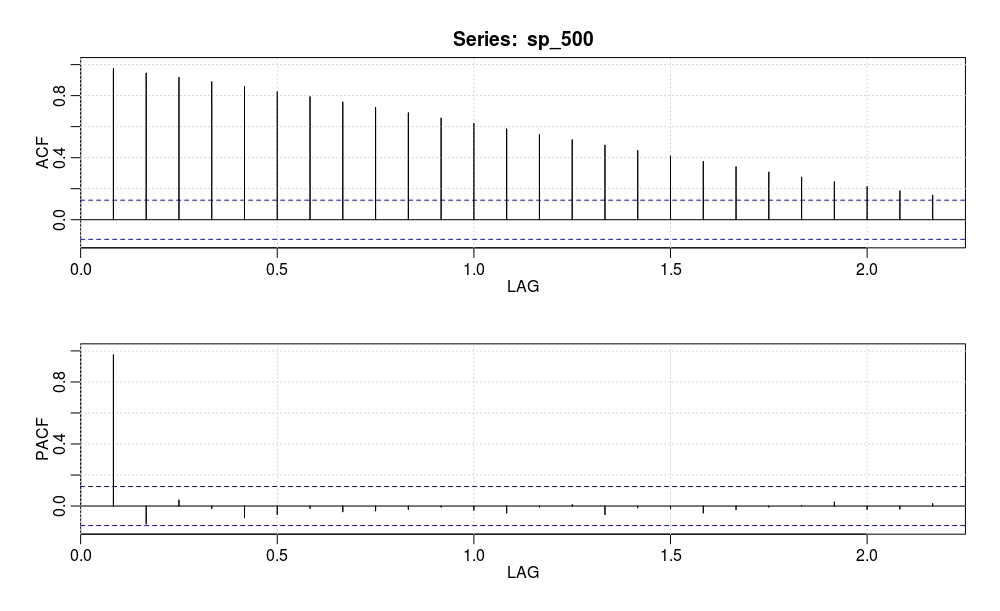
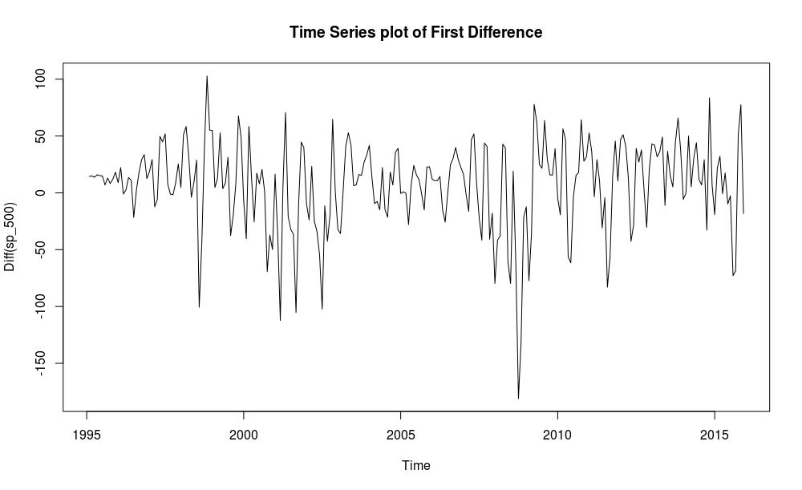
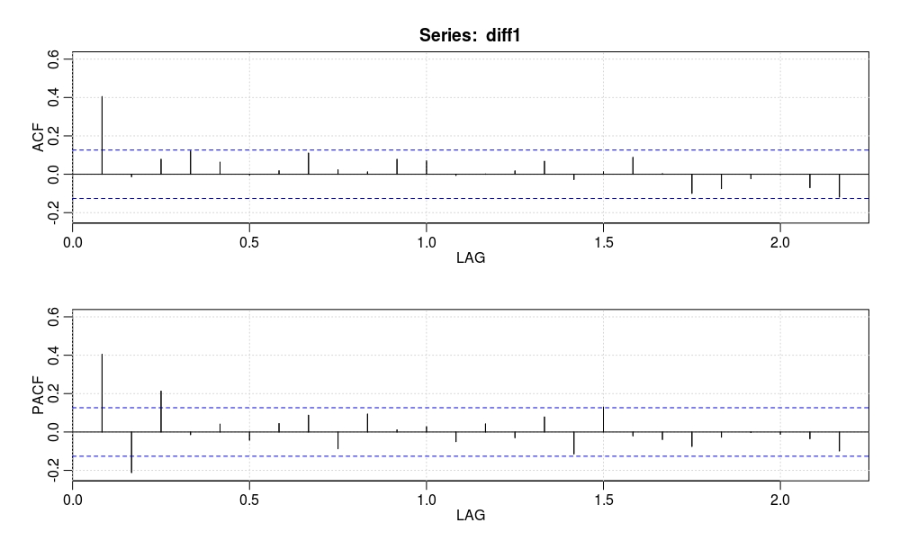

3.
Do exploratory analysis
Now we want to get a feel for our data to get an intuition about the models that may be appropriate for our forecast. For this, we plot our data and diagnose for trend, seasonality, heteroskedasticity, and stationarity. We go over these concepts in further detail in this section.
Creating time-series data object
Our S&P 500 Stock Index data is in the form of time-series; this means that our data exists over a continuous time interval with equal spacing between every two consecutive measurements. In R we are able to create time-series objects for our data vectors using the ts() method. For this, we select the vector we would like to use as the first argument, and tune the start and freq (frequency) parameters.
Then we output the time-series data to the terminal by calling our newly-created time-series object.
sp_500 <- ts(dataMaster$sp_500, start=c(1995, 1), freq=12)
Then we output the time-series data to the terminal by calling our newly-created time-series object. Notice the nicely formatted data broken down into years and their respective months.
sp_500

PLOTTING OUR TIME-SERIES
Plotting the data is arguably the most critical step in the exploratory analysis phase. This enables us to make inferences about important components of the time-series data, such as trend, seasonality, heteroskedasticity, and stationarity. Here is a quick summary of each:
-
Trend: we say that a dataset has a trend when it has either a long-term increase or decrease.
-
Seasonality: we say that a dataset has seasonality when it has patterns that repeat over known, fixed periods of time (e.g. monthly, quarterly, yearly).
-
Heteroskedasticity: we say that a data is heteroskedastic when its variability is not constant (i.e. its variance increases or decreases as a function of the explanatory variable).
-
Stationarity: a stochastic process is called stationary if the mean and variance are constant (i.e. their joint distribution does not change over time).
We can plot our sp_500 data object in R using the plot() method.
plot.ts(sp_500)

We can quickly see that over the long-term our time-series has a positive trend.
Using plotly.js and a bit of JavaScript knowledge we can produce a gorgeous data visualization onto our browser.
Decomposing our time-series
Beyond understanding the trend of our time-series, we want to further understand the anatomy of our data. For this reason we break-down our time-series into its seasonal component, trend, and residuals.
plot(stl(sp_500, s.window = "periodic"), main = "Decomposition for S&P 500")

This data decomposition allows us to extract and better understand the seasonal component of our time-series, as well as realize its volatility over time.
DIAGNOSING THE ACF AND PACF OF OUR TIME-SERIES
The ACF and PACF diagnosis is employed over a time-series to determine whether it has statistical stationarity. Loosely speaking, a time-series is stationary when its mean, variance, and autocorrelation remain constant over time. ACF stands for "autocorrelation function" and PACF stands for "partial autocorrelation function".
These functions help us understand the correlation component of different data points at different time lags. Lag refers to the time difference between one observation and a previous observation in a dataset.
To carry out our ACF and PACF diagnosis in R we use the acf2() method, which stems from the astsa package. We include our time-series object as the argument.
acf2(sp_500)

These plots tell us that the data is not stationary and that we would should do a transformation to adjust this. For this, we do difference transformation to get rid of the trend present in our data.
TRANSFORMING OUR DATA TO ADJUST FOR NON-STATIONARITY
A way to make a time-series stationary is to find the difference across its consecutive values. This helps stabilize the mean, thereby making the time-series object stationary.
For this we use the diff() method.
diff1 <- diff(sp_500)
Next we plot our transformed time-series using the plot.ts() method.
plot.ts(diff1, main = "Time Series Plot of First Diff")

This plot suggests that our working data is stationary. We want to confirm this running an ACF and PACF diagnostics over this data to find our if we can proceed to estimating a model.
DIAGNOSING THE ACF AND PACF OF OUR TRANSFORMED TIME-SERIES
The plot below helps us confirm that we have stationarity and also helps us deduce which model we will use. It is important to keep in mind that we have a difference parameter equal to one (i.e. d = 1) because of the previous transformation we carried out.
acf2(diff1)

From the above plots we deduce that an MA(1) model (where MA stands for moving average) best fits our data because the ACF cuts off at one significant lag and the PACF shows geometric decay.
Recall that we are examining the differenced time-series so we have to use the combined model ARIMA (autoregressive integrated moving average), thus our model so far is ARIMA(0, 1, 1).